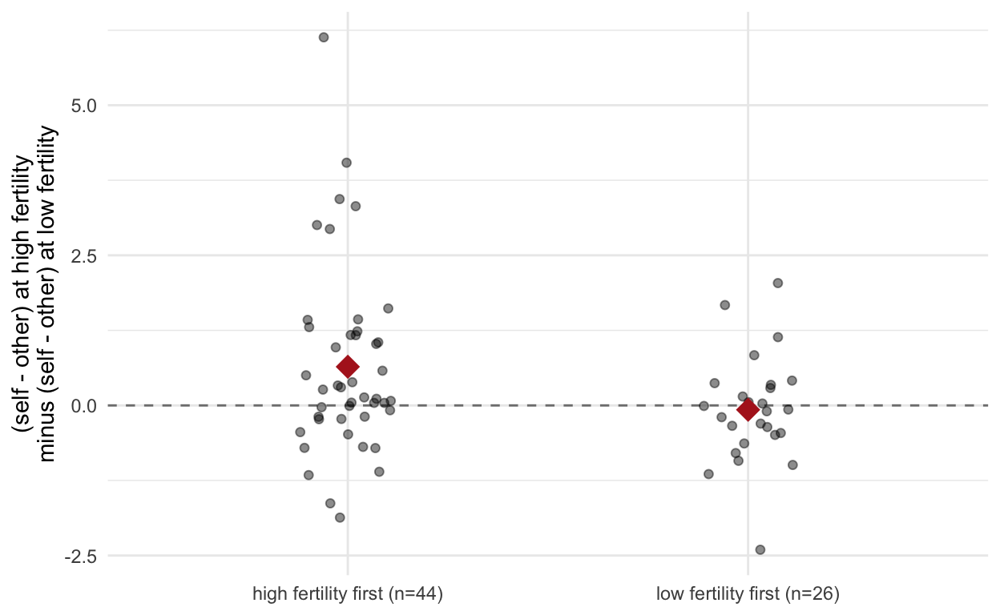

Had I Been a Reviewer.
A paper by Kim, Durante, Laran, Nikiforidis, & Griskevicius (2026, PLoS One).
A journalist just asked me for my opinion on this recent publication. The paper reports “that ovulation—the time of peak fertility—increases women’s desire to purchase conspicuous luxury goods”. Having worked on the topic of menstrual cycle research for a few years now, I was skeptical of these results. I fed the paper into Claude Opus 5 and had it look for some of the problems I typically see in menstrual cycle research (poor fertility measurement, poor hormone measures, small samples, uncorrected multiple testing) as well as errors. I also attached the data, that the authors, to their credit, shared on OSF.
Claude found a lot of errors. The paper has three studies. The studies are poorly designed if the goal is to have a realistic chance of findings non-sexuality-related psychological effects of being ovulatory. They ignore or misrepresent several recommendations that Gangestad, me, and others have made to improve such studies. More worryingly, all of these seem to have severe errors, ranging from basic statistical mistakes to citations that don’t back up claims). Once corrected, there is no support for the title claims. I verified two claims myself (the incorrect ANOVA in Study 1 and the incorrectly pooled SEs in Study 2). These two consequential mistakes already cross the threshold where I would urgently recommend the authors correct the paper, so I didn’t see the need to go deeper. However, they are just the tip of the iceberg and several other consequential errors were found and look plausible to me. Given the scope and number of errors, including unfixable design problems, a retraction might be warranted.
What follows is Claude Opus 5 output with minor rewriting from me. I then had Claude Fable 5.1 re-run every analysis below against the posted data, read the AsPredicted entry and the abstracts of the two key methodological citations, and adjust the text where a claim was overstated or its consequences were unclear. One claim that was technically true but inconsequential (the paper’s “low fertility” prediction point lies 0.0015 below a conception probability of zero) was dropped from the list of errors.
library(haven)
library(sandwich)
library(knitr)
library(ggplot2)
dd <- here::here("_posts/2026-09-11-hibar-fertility-and-conspicuous-consumption")
s1 <- as.data.frame(read_sav(file.path(dd, "Fertility_Data_Study 1.sav")))
s2 <- as.data.frame(read_sav(file.path(dd, "Fertility_Data_Study 2.sav")))
s3 <- as.data.frame(read_sav(file.path(dd, "Fertility_Data_Study 3.sav")))
s1[] <- lapply(s1, as.numeric); s2[] <- lapply(s2, as.numeric); s3[] <- lapply(s3, as.numeric)
posted_ncol <- c(`Study 1` = ncol(s1), `Study 2` = ncol(s2), `Study 3` = ncol(s3))
fmt_p <- function(p) ifelse(p < .0001, "<.0001", formatC(p, format = "f", digits = 4))
theme_set(theme_minimal(base_size = 11))I downloaded the three SPSS files from the paper’s OSF deposit (https://osf.io/c3v49/) and the AsPredicted entry for Study 3 (#153,708, https://aspredicted.org/C2V_Q4Y, a PDF copy is in this post’s folder), and re-ran every analysis for which data are posted. The pretests, the SES-adjusted three-way interaction in Study 2, and the sexual-orientation controls cannot be re-run from the deposit. Everything else below is reproducible from those three files plus this document.
The summary is:
The paper analyses logo area in a repeated-measures ANOVA “with SES as a covariate” and
reports four tests. In SPSS GLM ... /WSFACTOR, the Tests of Within-Subjects Effects
table does not centre covariates. The row for a within-subjects effect therefore
tests the contrast mean at covariate = 0, not the average contrast mean. SES here is the
mean of two 1–5 items; its observed minimum is 1.
Each within-subjects test is algebraically the intercept test in a regression of the relevant difference score on the covariate, so all four are reproducible in three lines of R:
s1$Low_Self_B <- ifelse(is.na(s1$Low_Self_S),
s1$Low_Self_BS,
2 * s1$Low_Self_BS - s1$Low_Self_S) # absent from the posted file
ctest <- function(y, cov = NULL, center = TRUE) {
ok <- !is.na(y); y <- y[ok]
if (is.null(cov)) m <- lm(y ~ 1) else {
x <- cov[ok]; if (center) x <- x - mean(x); m <- lm(y ~ x)
}
cf <- summary(m)$coefficients["(Intercept)", ]
Fv <- cf[["t value"]]^2
data.frame(n = length(y), M = mean(y), F = Fv, df = m$df.residual,
p = cf[["Pr(>|t|)"]], eta2p = Fv / (Fv + m$df.residual))
}
with(s1, {
cs <- list(
`fertility x target` = (High_Self_BS - High_Other_BS) - (Low_Self_BS - Low_Other_BS),
`H1: self, high-low` = High_Self_BS - Low_Self_BS,
`high fert: self-other`= High_Self_BS - High_Other_BS,
`other, high-low` = High_Other_BS - Low_Other_BS)
out <- do.call(rbind, lapply(names(cs), function(nm) {
a <- ctest(cs[[nm]], SES, center = FALSE) # SPSS default
b <- ctest(cs[[nm]], SES, center = TRUE) # correct
d <- ctest(cs[[nm]]) # no covariate
data.frame(effect = nm,
`F uncentered` = round(a$F, 2), `p uncentered` = fmt_p(a$p),
`F centered` = round(b$F, 2), `p centered` = fmt_p(b$p),
`F no cov` = round(d$F, 2), `p no cov` = fmt_p(d$p),
check.names = FALSE)
}))
kable(out, caption = "Study 1: the published F values are the uncentered column.")
})| effect | F uncentered | p uncentered | F centered | p centered | F no cov | p no cov |
|---|---|---|---|---|---|---|
| fertility x target | 16.19 | 0.0001 | 6.00 | 0.0169 | 5.21 | 0.0255 |
| H1: self, high-low | 6.34 | 0.0141 | 1.82 | 0.1822 | 1.72 | 0.1938 |
| high fert: self-other | 4.59 | 0.0358 | 0.85 | 0.3611 | 0.81 | 0.3704 |
| other, high-low | 7.87 | 0.0065 | 3.60 | 0.0620 | 3.39 | 0.0698 |
Published values for comparison: 16.19, 6.34, 4.59, 7.88. The uncentered column matches all four (the last is 7.87 here, 7.8746 unrounded, against the paper’s 7.88), while neither the centered nor the covariate-free column comes close. That leaves little doubt about the provenance: the published tests are evaluated at SES = 0.
What the extrapolation amounts to:
with(s1, {
h1 <- High_Self_BS - Low_Self_BS
ix <- (High_Self_BS - High_Other_BS) - (Low_Self_BS - Low_Other_BS)
out <- do.call(rbind, lapply(list(`H1: self, high-low` = h1, `fertility x target` = ix),
function(y) { m <- lm(y ~ SES); data.frame(
`intercept (SES = 0)` = round(coef(m)[1], 3),
`slope per SES point` = round(coef(m)[2], 3),
`p (slope)` = round(summary(m)$coefficients[2, 4], 3),
`sample mean effect` = round(mean(y), 3), check.names = FALSE) }))
out <- cbind(effect = c("H1: self, high-low", "fertility x target"), out)
kable(out, row.names = FALSE,
caption = sprintf("SES ranges %.1f to %.1f in this sample.", min(SES), max(SES)))
})| effect | intercept (SES = 0) | slope per SES point | p (slope) | sample mean effect |
|---|---|---|---|---|
| H1: self, high-low | 0.851 | -0.222 | 0.032 | 0.158 |
| fertility x target | 1.783 | -0.451 | 0.001 | 0.378 |
The published “significant” H1 effect of 0.85 in² is the intercept of a line evaluated five scale points below the lowest observed SES. The actual average effect is 0.16 in², p = .18.
So Hypothesis 1 is not supported in Study 1 under any specification I can think of. The one effect that survives is the interaction (p = .017 centered, p = .026 without the covariate), and it is carried by the decrease in logo size drawn for other women, which the paper itself calls unexpected and then treats as confirmation. The sentence “fertility increased logo size, as women drew significantly bigger logos in the high fertility … study session (F(1, 68) = 6.34, p = .014)” is simply not true of these data. The 0.16 in² difference is not distinguishable from zero.
The DV is the mean of a handbag logo and a shoe logo. Shoe drawings are missing in a
strongly non-random pattern, and the composite silently falls back to the bag value
alone. Low_Self_B is missing from the posted file entirely; I reconstructed it above.
cells <- c("Low_Self", "High_Self", "Low_Other", "High_Other")
kable(do.call(rbind, lapply(cells, function(cl) {
b <- s1[[paste0(cl, "_B")]]; sh <- s1[[paste0(cl, "_S")]]
data.frame(cell = cl,
`bag missing` = sum(is.na(b)), `shoe missing` = sum(is.na(sh)),
`bag M` = round(mean(b, na.rm = TRUE), 3),
`shoe M` = round(mean(sh, na.rm = TRUE), 3),
`composite M` = round(mean(s1[[paste0(cl, "_BS")]]), 3),
check.names = FALSE)
})), row.names = FALSE, caption = "Logo area, square inches.")| cell | bag missing | shoe missing | bag M | shoe M | composite M |
|---|---|---|---|---|---|
| Low_Self | 0 | 12 | 1.491 | 0.559 | 1.120 |
| High_Self | 1 | 18 | 1.616 | 0.596 | 1.278 |
| Low_Other | 0 | 0 | 2.089 | 0.602 | 1.346 |
| High_Other | 0 | 0 | 1.656 | 0.597 | 1.126 |
Bag logos are about three times the size of shoe logos, so substituting the bag value for the composite inflates a cell. That inflation hits 18 cases in the high-fertility self cell, 12 in the low-fertility self cell, and none in either other cell. That is the direction of Hypothesis 1 and of the interaction.
cc <- complete.cases(s1[, c(outer(cells, c("_B", "_S"), paste0))])
tru <- sapply(cells, function(cl) (s1[[paste0(cl, "_B")]] + s1[[paste0(cl, "_S")]]) / 2)
spec <- function(dat, ses, lab) {
ix <- (dat[, "High_Self"] - dat[, "High_Other"]) - (dat[, "Low_Self"] - dat[, "Low_Other"])
h1 <- dat[, "High_Self"] - dat[, "Low_Self"]
a <- ctest(ix, ses); b <- ctest(h1, ses)
data.frame(specification = lab, n = a$n,
`interaction F` = round(a$F, 2), `interaction p` = fmt_p(a$p),
`H1 F` = round(b$F, 2), `H1 p` = fmt_p(b$p), check.names = FALSE)
}
bs <- as.matrix(s1[, paste0(cells, "_BS")]); colnames(bs) <- cells
bg <- as.matrix(s1[, paste0(cells, "_B")]); colnames(bg) <- cells
sh <- as.matrix(s1[, paste0(cells, "_S")]); colnames(sh) <- cells
kable(rbind(
spec(bs, s1$SES, "as published (mean of available drawings)"),
spec(bg, s1$SES, "bags only"),
spec(sh[complete.cases(sh), ], s1$SES[complete.cases(sh)], "shoes only"),
spec(tru[cc, ], s1$SES[cc], "complete cases, true 2-item composite")),
row.names = FALSE, caption = "All covariates correctly centered.")| specification | n | interaction F | interaction p | H1 F | H1 p |
|---|---|---|---|---|---|
| as published (mean of available drawings) | 70 | 6.00 | 0.0169 | 1.82 | 0.1822 |
| bags only | 69 | 6.79 | 0.0113 | 0.88 | 0.3517 |
| shoes only | 52 | 0.00 | 0.9999 | 0.30 | 0.5865 |
| complete cases, true 2-item composite | 51 | 1.55 | 0.2189 | 0.20 | 0.6544 |
The test of Hypothesis 1 is null in every variant. The interaction survives only in the bags-only row, where the self cells still differ from the other cells in n. In the 51 women who actually produced all eight drawings it is gone (p = .22, and p = .25 without the covariate). Some of that is lost power from dropping 19 women, but the published interaction still depends on a composite that is built differently in the two self cells than in the two other cells.
Order was not counterbalanced, although the paper says in one place that “the order was
counterbalanced” and in another that it “depended on where she was in her menstrual cycle”
at screening, producing 63% high-fertility-first. Order is therefore correlated with
fertility by design, and the two sessions differ in practice/familiarity with the drawing
task. (Session_Order is unlabelled in the posted file and takes the values −1 for 44
women and 1 for 26; only 1 = low-fertility-first reproduces the paper’s 37%/63% split, so
that is the coding used here.)
with(s1, {
ix <- (High_Self_BS - High_Other_BS) - (Low_Self_BS - Low_Other_BS)
lowfirst <- Session_Order == 1
tt <- t.test(ix[lowfirst], ix[!lowfirst])
# recode the same contrast by session number instead of fertility
self1 <- ifelse(lowfirst, Low_Self_BS, High_Self_BS)
self2 <- ifelse(lowfirst, High_Self_BS, Low_Self_BS)
oth1 <- ifelse(lowfirst, Low_Other_BS, High_Other_BS)
oth2 <- ifelse(lowfirst, High_Other_BS, Low_Other_BS)
ix_ses <- (self1 - oth1) - (self2 - oth2)
kable(data.frame(
contrast = c("fertility x target, low-fertility-first group (n=26)",
"fertility x target, high-fertility-first group (n=44)",
"difference between the two groups",
"SESSION 1 vs 2 x target (same data, order recoding)",
"logos for OTHER women, session 1 vs session 2"),
M = round(c(mean(ix[lowfirst]), mean(ix[!lowfirst]),
mean(ix[lowfirst]) - mean(ix[!lowfirst]),
mean(ix_ses), mean(oth1 - oth2)), 3),
t = round(c(t.test(ix[lowfirst])$statistic, t.test(ix[!lowfirst])$statistic,
tt$statistic, t.test(ix_ses)$statistic, t.test(oth1 - oth2)$statistic), 2),
p = fmt_p(c(t.test(ix[lowfirst])$p.value, t.test(ix[!lowfirst])$p.value,
tt$p.value, t.test(ix_ses)$p.value, t.test(oth1 - oth2)$p.value))),
row.names = FALSE)
})| contrast | M | t | p |
|---|---|---|---|
| fertility x target, low-fertility-first group (n=26) | -0.072 | -0.41 | 0.6844 |
| fertility x target, high-fertility-first group (n=44) | 0.644 | 2.75 | 0.0087 |
| difference between the two groups | -0.716 | -2.45 | 0.0171 |
| SESSION 1 vs 2 x target (same data, order recoding) | 0.432 | 2.64 | 0.0103 |
| logos for OTHER women, session 1 vs session 2 | -0.303 | -2.60 | 0.0113 |
The interaction is absent in the 26 women who did the low-fertility session first. The difference between the two order groups is itself significant (Welch p = .017 in the table; p = .036 assuming equal variances). And if you recode the contrast by session number instead of by fertility, you get an effect at least as strong (p = .010) as the published fertility interaction (p = .026). Every woman has exactly one order, so the design has no way to tell a fertility effect from a session effect. The paper’s Limitations section says the within-subject design “rules out situational differences”. It does not, when the situation (first vs second visit) is confounded with the predictor.
The last row shows what an order account would look like: women drew larger logos for other women in their second session than their first, while self-logos did not change. Because 63% of women had their high-fertility session first, a session-2 inflation of other-directed logos would appear in the analysis as “smaller other-logos at high fertility”. This is a between-person comparison, and the two order groups also differ in where they were in their cycle at screening, so it is an alternative explanation the design cannot exclude rather than a demonstrated mechanism.
with(s1, {
ix <- (High_Self_BS - High_Other_BS) - (Low_Self_BS - Low_Other_BS)
d <- data.frame(ix, order = factor(ifelse(Session_Order == 1, "low fertility first (n=26)",
"high fertility first (n=44)")))
ggplot(d, aes(order, ix)) +
geom_hline(yintercept = 0, linetype = 2, colour = "grey50") +
geom_jitter(width = .12, alpha = .45, size = 1.6) +
stat_summary(fun = mean, geom = "point", shape = 18, size = 5, colour = "firebrick") +
labs(x = NULL, y = "(self - other) at high fertility\nminus (self - other) at low fertility")
})
Figure 1: Study 1 interaction contrast by session order. Points are participants; diamonds are group means.
Logo area is bounded at zero, right-skewed, and has SD > M in three of four cells. The interaction does not survive a change of scale or of test.
with(s1, {
ix <- (High_Self_BS - High_Other_BS) - (Low_Self_BS - Low_Other_BS)
lix <- (log(High_Self_BS) - log(High_Other_BS)) - (log(Low_Self_BS) - log(Low_Other_BS))
h1 <- High_Self_BS - Low_Self_BS
lh1 <- log(High_Self_BS) - log(Low_Self_BS)
kable(data.frame(
test = c("interaction, raw t-test", "interaction, Wilcoxon signed rank",
"interaction, log scale", "H1, raw t-test", "H1, Wilcoxon", "H1, log scale"),
p = fmt_p(c(t.test(ix)$p.value, wilcox.test(ix)$p.value, t.test(lix)$p.value,
t.test(h1)$p.value, wilcox.test(h1)$p.value, t.test(lh1)$p.value))),
row.names = FALSE)
})| test | p |
|---|---|
| interaction, raw t-test | 0.0255 |
| interaction, Wilcoxon signed rank | 0.1088 |
| interaction, log scale | 0.1808 |
| H1, raw t-test | 0.1938 |
| H1, Wilcoxon | 0.6230 |
| H1, log scale | 0.6197 |
The skew, and the fact that the paper never says whether the people measuring logos with a caliper were blind to session, would each deserve a sentence in any published version.
s2$IVc <- s2$IV - mean(s2$IV)
m2 <- lm(DV ~ IVc * BrandType * Setting, data = s2)
kable(round(summary(m2)$coefficients, 3), caption = "PROCESS Model 3, reproduced as OLS.")| Estimate | Std. Error | t value | Pr(>|t|) | |
|---|---|---|---|---|
| (Intercept) | 3.610 | 0.081 | 44.531 | 0.000 |
| IVc | 1.271 | 2.677 | 0.475 | 0.635 |
| BrandType | -0.883 | 0.081 | -10.896 | 0.000 |
| Setting | 0.364 | 0.081 | 4.485 | 0.000 |
| IVc:BrandType | -1.605 | 2.677 | -0.599 | 0.549 |
| IVc:Setting | 5.883 | 2.677 | 2.198 | 0.029 |
| BrandType:Setting | 0.340 | 0.081 | 4.199 | 0.000 |
| IVc:BrandType:Setting | 6.526 | 2.677 | 2.438 | 0.015 |
The three-way interaction reproduces exactly (b = 6.53, SE = 2.68, p = .015). So do the paper’s conditional effects, including their standard errors (5.47 and 5.87), which confirms they come from the pooled residual variance of the full model. That pooling assumes equal error variance across the four cells:
cell <- interaction(s2$BrandType, s2$Setting)
z <- abs(s2$DV - ave(s2$DV, cell, FUN = median))
lev <- anova(lm(z ~ cell))
cat(sprintf("Brown-Forsythe / Levene: F(%d, %d) = %.2f, p = %.2g\n",
lev$Df[1], lev$Df[2], lev$`F value`[1], lev$`Pr(>F)`[1]))Brown-Forsythe / Levene: F(3, 328) = 10.69, p = 1e-06kable(data.frame(cell = c("nonluxury / private", "luxury / private",
"nonluxury / public", "luxury / public"),
`SD of DV` = round(as.numeric(tapply(s2$DV, cell, sd)), 2),
check.names = FALSE), row.names = FALSE)| cell | SD of DV |
|---|---|
| nonluxury / private | 1.24 |
| luxury / private | 1.74 |
| nonluxury / public | 0.90 |
| luxury / public | 1.89 |
Variances differ by a factor of four (SD 0.90 vs 1.89), and Levene’s test rejects equality at p < 10⁻⁵. Pooling borrows precision from the tight nonluxury cells and lends it to the luxury cells, where the hypotheses live.
slope <- function(mod, B, S, V) {
k <- setNames(rep(0, length(coef(mod))), names(coef(mod)))
k["IVc"] <- 1; k["IVc:BrandType"] <- B; k["IVc:Setting"] <- S
k["IVc:BrandType:Setting"] <- B * S
b <- sum(k * coef(mod)); se <- sqrt(drop(t(k) %*% V %*% k))
c(b = b, se = se, p = 2 * pt(abs(b / se), mod$df.residual, lower.tail = FALSE))
}
cells2 <- list(c(1, 1), c(1, -1), c(-1, 1), c(-1, -1))
labs2 <- c("luxury / public", "luxury / private", "nonluxury / public", "nonluxury / private")
pooled <- t(sapply(cells2, function(x) slope(m2, x[1], x[2], vcov(m2))))
robust <- t(sapply(cells2, function(x) slope(m2, x[1], x[2], vcovHC(m2, type = "HC3"))))
percell <- t(sapply(cells2, function(x) {
d <- s2[s2$BrandType == x[1] & s2$Setting == x[2], ]
cf <- unname(summary(lm(DV ~ IVc, data = d))$coefficients[2, ])
c(b = cf[1], se = cf[2], p = cf[4])
}))
spear <- sapply(cells2, function(x) {
d <- s2[s2$BrandType == x[1] & s2$Setting == x[2], ]
cor.test(d$IV, d$DV, method = "spearman", exact = FALSE)$p.value
})
kable(data.frame(
`conditional slope` = labs2,
b = round(pooled[, "b"], 2),
`p (pooled MSE, as published)` = fmt_p(pooled[, "p"]),
`p (HC3 robust)` = fmt_p(robust[, "p"]),
`p (within-cell OLS)` = fmt_p(percell[, "p"]),
`p (Spearman)` = fmt_p(spear),
check.names = FALSE), row.names = FALSE)| conditional slope | b | p (pooled MSE, as published) | p (HC3 robust) | p (within-cell OLS) | p (Spearman) |
|---|---|---|---|---|---|
| luxury / public | 12.08 | 0.0279 | 0.0850 | 0.0859 | 0.1893 |
| luxury / private | -12.74 | 0.0306 | 0.0177 | 0.0655 | 0.0481 |
| nonluxury / public | 2.23 | 0.6533 | 0.4328 | 0.4653 | 0.5812 |
| nonluxury / private | 3.52 | 0.4879 | 0.3871 | 0.4128 | 0.2460 |
V3 <- vcovHC(m2, type = "HC3")
ixs <- c("IVc:Setting", "IVc:BrandType:Setting")
kable(data.frame(term = ixs, b = round(coef(m2)[ixs], 2),
`p (pooled)` = fmt_p(summary(m2)$coefficients[ixs, 4]),
`p (HC3)` = fmt_p(2 * pt(abs(coef(m2)[ixs] / sqrt(diag(V3)[ixs])), m2$df.residual, lower.tail = FALSE)),
check.names = FALSE), row.names = FALSE,
caption = "The interaction terms survive robust standard errors; the simple slopes do not.")| term | b | p (pooled) | p (HC3) |
|---|---|---|---|
| IVc:Setting | 5.88 | 0.0287 | 0.0204 |
| IVc:BrandType:Setting | 6.53 | 0.0153 | 0.0102 |
The interactions themselves are not in doubt. With HC3 standard errors the three-way interaction is p = .010 and the fertility × setting interaction within luxury brands is p = .005. What changes is the decomposition the paper’s conclusions are built on. The effect that supports Hypothesis 1, fertility raising purchase intention for publicly worn luxury, is p ≈ .08 with robust or within-cell standard errors, and p = .19 by rank correlation. The paper’s sentence “Fertility had a positive effect on purchase intention in a public setting (b = 12.08, SE = 5.47, p = .028)” rests on a standard error that is too small by about a quarter. The only slope that gets stronger under HC3 correction is the negative one in the private condition. That contradicts H3 as written, which predicted no effect in private, not a reversal. And that slope is fragile too: p = .07 by within-cell OLS, and gone after removing five influential cases.
dpriv <- s2[s2$BrandType == 1 & s2$Setting == -1, ]
mp <- lm(DV ~ IV, data = dpriv)
drop5 <- dpriv[-order(cooks.distance(mp), decreasing = TRUE)[1:5], ]
cf <- summary(lm(DV ~ IV, data = drop5))$coefficients[2, ]
cat(sprintf("private luxury, dropping 5 most influential cases: b = %.2f, p = %.3f (n = %d)\n",
cf[1], cf[4], nrow(drop5)))private luxury, dropping 5 most influential cases: b = -4.48, p = 0.403 (n = 78)lux <- c("Chanel", "Prada", "Gucci", "LV", "Fendi", "Burberry")
pl <- s2[s2$Setting == -1 & s2$BrandType == 1, paste0("Private_", lux)]
pu <- s2[s2$Setting == 1 & s2$BrandType == 1, paste0("Public_", lux)]
alpha <- function(X) { X <- na.omit(X); k <- ncol(X)
k / (k - 1) * (1 - sum(apply(X, 2, var)) / var(rowSums(X))) }
kable(data.frame(
block = c("private luxury", "public luxury"),
`alpha (reported)` = c(".99", ".97"),
`alpha (computed)` = round(c(alpha(pl), alpha(pu)), 3),
`% identical across all 6 brands` = round(100 * c(mean(apply(pl, 1, function(r) length(unique(r)) == 1)),
mean(apply(pu, 1, function(r) length(unique(r)) == 1))), 1),
`% answering 1 to all 6` = round(100 * c(mean(apply(pl, 1, function(r) all(r == 1))),
mean(apply(pu, 1, function(r) all(r == 1)))), 1),
check.names = FALSE), row.names = FALSE)| block | alpha (reported) | alpha (computed) | % identical across all 6 brands | % answering 1 to all 6 |
|---|---|---|---|---|
| private luxury | .99 | 0.985 | 60.2 | 50.6 |
| public luxury | .97 | 0.965 | 31.6 | 16.5 |
dpriv <- s2[s2$BrandType == 1 & s2$Setting == -1, ]
cf <- summary(glm(I(DV > 1) ~ IV, data = dpriv, family = binomial))$coefficients[2, ]
cat(sprintf("private luxury, logistic regression of any interest (DV > 1) on fertility: b = %.1f, p = %.2f\n", cf[1], cf[4]))private luxury, logistic regression of any interest (DV > 1) on fertility: b = -11.1, p = 0.18Half the private-luxury respondents answered “not at all” to all six brands and 60% gave six identical answers. The α = .99 the paper reports as evidence of scale quality mostly measures that people did not differentiate between Chanel and Burberry. Fitting OLS to that variable and interpreting a slope on it is not sound. An ordinal or censored model is the minimum, and even then there is very little signal to model. A logistic regression of “any interest at all” on fertility in this cell gives p = .18.
The predictor has the same problem in milder form. Conception probability is bounded at zero and right-skewed: a third of the sample sits at or below .005 and 20 women sit at exactly zero, so the “−1 SD” point at which the paper reports its “low fertility” means is effectively the floor of the scale.
mu <- mean(s2$IV); sdv <- sd(s2$IV)
cat(sprintf("mean = %.4f, SD = %.4f; -1 SD = %+.4f; observed min = %.3f; %% at IV <= .005 = %.1f; n at 0 = %d\n",
mu, sdv, mu - sdv, min(s2$IV), 100 * mean(s2$IV <= .005), sum(s2$IV == 0)))mean = 0.0291, SD = 0.0306; -1 SD = -0.0015; observed min = 0.000; % at IV <= .005 = 33.1; n at 0 = 20Of 1,486 women recruited, 938 passed the health and contraception screening and 332 were analysed, a 22% retention rate. The second step alone discards 65% on cycle-date certainty and cycle length. That is very high, and the paper does not ask why. The criteria are joined with “and” in Study 2 and with “or” in Study 3, and whether all four separate certainty ratings had to clear 6 is not stated.
This is not neutral data cleaning. Cycle regularity and self-reported cycle knowledge depend on hormonal health, age, BMI, stress and conscientiousness. Conditioning the sample on them, while the exposure of interest is computed from the same self-reports, is a selection problem that could bias the fertility–outcome association in either direction. The paper’s stated target was n = 500. It finished at 332 without comment.
cat(sprintf("age: M = %.2f, SD = %.2f, range %d-%d; n over 40 = %d\n",
mean(s2$Age), sd(s2$Age), min(s2$Age), max(s2$Age), sum(s2$Age > 40)))age: M = 30.79, SD = 6.39, range 18-64; n over 40 = 6Six women over 40 (the oldest is 64) are kept in a conception-probability analysis, while Study 3 prescreened to 18–40. The two studies disagree with each other about whether this matters.
s3$IVc <- s3$IV - mean(s3$IV)
m3 <- glm(DV ~ IVc * Belief, data = s3, family = binomial)
kable(round(summary(m3)$coefficients, 3))| Estimate | Std. Error | z value | Pr(>|z|) | |
|---|---|---|---|---|
| (Intercept) | -0.123 | 0.108 | -1.134 | 0.257 |
| IVc | 4.398 | 3.536 | 1.244 | 0.214 |
| Belief | -0.237 | 0.108 | -2.189 | 0.029 |
| IVc:Belief | -5.826 | 3.536 | -1.648 | 0.099 |
ss <- function(bel) {
k <- c(0, 1, 0, bel)
b <- sum(k * coef(m3)); se <- sqrt(drop(t(k) %*% vcov(m3) %*% k))
c(b = b, se = se, p = 2 * pnorm(abs(b / se), lower.tail = FALSE))
}
kable(data.frame(
condition = c("control", "weak belief"),
b = round(c(ss(-1)["b"], ss(1)["b"]), 2),
SE = round(c(ss(-1)["se"], ss(1)["se"]), 2),
p = fmt_p(c(ss(-1)["p"], ss(1)["p"]))), row.names = FALSE,
caption = "Simple slopes of fertility on luxury choice.")| condition | b | SE | p |
|---|---|---|---|
| control | 10.22 | 5.56 | 0.0659 |
| weak belief | -1.43 | 4.37 | 0.7438 |
This reproduces the paper exactly: interaction b = −5.83, SE = 3.54, p = .099; control-condition slope b = 10.22, SE = 5.56, p = .066. The preregistered prediction was not confirmed.
AsPredicted #153,708 (registered 2023-12-03, three days before data collection began), section 6, states the analysis exclusions:
We will only include women with regular ovulation cycles (i.e., between 25 and 36 days, inclusive) … Moreover, we will only include women who are relatively certain (i.e., 6 or higher on a 9-point scale) about their reported period dates and usual cycle length.
The paper then reports an analysis on n = 888 “without excluding women who were unsure about their menstrual cycle”, p = .024, and presents it as support. This drops a preregistered exclusion criterion after the preregistered analysis failed, and the justification given in the text is the failure itself (“Given the marginally significant interaction…”). The same paper says that “all analyses, sample size, and exclusion criteria were pre-registered.” Both cannot be true.
Further undisclosed deviations:
| Preregistered | Reported |
|---|---|
| N = 1,000 after prescreening | 966 collected |
| Exclusions: cycle length 25–36, certainty ≥ 6 | plus 88 excluded on an unregistered manipulation-check item |
| Regression with fertility × condition | same, but the conclusion rests on the unregistered full sample |
tb <- table(s3$Belief)
bt <- binom.test(as.integer(tb["1"]), sum(tb), .5)
cat(sprintf("control n = %d, weak-belief n = %d, binomial p = %.4f\n",
tb["-1"], tb["1"], bt$p.value))control n = 156, weak-belief n = 202, binomial p = 0.0173cat(sprintf("manipulation-check variable in posted data: %d unique value(s) -> only passers are posted\n",
length(unique(s3$mc))))manipulation-check variable in posted data: 1 unique value(s) -> only passers are postedThe condition sizes are unbalanced (156 vs 202, p = .017). Random assignment should not produce this; some exclusion step did. One candidate is the unregistered manipulation-check filter: the control-condition memory question (2 trillion vs 1 trillion galaxies) is harder than the weak-belief one (beauty / smile / walk vs height / table manners / brand), so it plausibly removed more controls. This cannot be checked, because neither the 966 nor the 888 cases are posted. But if it is what happened, the control group is differentially enriched for attentive responders, and attentiveness plausibly governs both cycle-date certainty (the second exclusion step) and care in choosing between gift cards. That would break randomisation on exactly the dimension that matters for the one “significant” simple slope.
The posted file contains only the 358 analysed cases (mc is constant), so the
n = 888 analysis on which the conclusion depends cannot be checked by anyone.
s3$tert <- ave(s3$IV, s3$Belief, FUN = function(x) as.integer(cut(x, quantile(x, 0:3/3), include.lowest = TRUE)))
tab <- aggregate(DV ~ Belief + tert, s3, function(x) c(n = length(x), pct = 100 * mean(x)))
tab <- data.frame(condition = ifelse(tab$Belief == -1, "control", "weak belief"),
`fertility tertile` = c("low", "mid", "high")[tab$tert],
n = tab$DV[, "n"], `% luxury` = round(tab$DV[, "pct"], 1), check.names = FALSE)
kable(tab[order(tab$condition, match(tab$`fertility tertile`, c("low","mid","high"))), ], row.names = FALSE)| condition | fertility tertile | n | % luxury |
|---|---|---|---|
| control | low | 56 | 44.6 |
| control | mid | 49 | 49.0 |
| control | high | 51 | 64.7 |
| weak belief | low | 73 | 35.6 |
| weak belief | mid | 72 | 50.0 |
| weak belief | high | 57 | 36.8 |
mcut <- median(s3$IV)
for (b in c(-1, 1)) {
d <- s3[s3$Belief == b, ]
ct <- chisq.test(table(d$IV > mcut, d$DV), correct = FALSE)
cat(sprintf("%-12s low-fert %.1f%% (n=%d) vs high-fert %.1f%% (n=%d), chi2 p = %.3f\n",
ifelse(b == -1, "control", "weak belief"),
100 * mean(d$DV[d$IV <= mcut]), sum(d$IV <= mcut),
100 * mean(d$DV[d$IV > mcut]), sum(d$IV > mcut), ct$p.value))
}control low-fert 44.2% (n=86) vs high-fert 62.9% (n=70), chi2 p = 0.020
weak belief low-fert 40.4% (n=109) vs high-fert 41.9% (n=93), chi2 p = 0.821The control-condition pattern is at least monotone, and the median split is significant. That is the most credible signal in the whole paper: one marginal moderation on a binary outcome, which becomes significant only after an unregistered change to the sample, in a 2023–24 MTurk sample prescreened by self-report for recent luxury purchasing.
Studies 2 and 3 count backward from the participant’s expected next period, which is never checked against an actual onset. This is the weakest of the counting methods. The “expected” date is itself a forward projection from self-reported cycle length, so it inherits exactly the error that backward counting is supposed to remove. Gangestad et al. (2016), the paper’s own methodological authority, recommend verifying against the next onset. Study 1 did that with a post-study phone call, so the authors know the step exists. Studies 2 and 3 skip it.
Two things follow from this that the paper never deals with.
First, the conception-probability variable is not a hormone. It is computed from days since reported last onset and reported cycle length, so it correlates with everything else that tracks cycle day. In a cross-sectional design, “low fertility” pools women who are menstruating with women who are premenstrual, and both groups have obvious reasons of their own to be less interested in buying a designer T-shirt to wear in public. A fertility effect and a “neither bleeding nor premenstrual” effect are never separated. Modelling cycle day non-linearly, or contrasting matched pre- and post-ovulatory windows, would have done it.
Second, the estrogen mechanism is asserted throughout and measured nowhere. The theoretical frame is that “estrogen levels increase and induce a nonconscious mating goal”. Study 1 detects an LH surge, which is a reasonable phase marker but says nothing about estradiol levels. Studies 2 and 3 measure nothing at all.
Here the methodological literature cuts in a direction the paper does not expect. Arslan et al. (2023, Psychoneuroendocrinology 149: 105994) show that adding salivary estradiol immunoassays would not have helped. Across more than 1,200 participants and 9,500 time points, salivary immunoassay estradiol was only weakly predictable from cycle phase and biased upward relative to serum, and imputing the population-average serum change from a good phase measure was more valid than assaying the individual. So the right response to “no hormones were measured” is not that the authors should have collected saliva. It is that the whole inferential chain rests on the phase measure being good enough to carry the imputation, and reverse counting from an unverified expected onset is not. The reference list does contain Arslan et al. (2021) and Schleifenbaum et al. (2021), but only for substantive claims about desire and self-perceived attractiveness, and none of the methodological content of those papers shows up.
Both sample-size justifications are for “medium” effects. Large diary and hormone studies of the last decade put credible ovulatory shifts in the small range for most outcomes, and well below that for something as downstream as consumer behaviour. When the true effect is small, powering for d = 0.5 means that whatever clears p < .05 is inflated in expectation, which is what the re-analysis shows.
The novelty claim is contradicted by the paper’s own reference list. “This research shows a novel factor – high fertility – that has not been previously explored as an influence on luxury consumption” sits alongside citations to Durante et al. (2011) on ovulation and product choice, Durante et al. (2014) on money, status and the ovulatory cycle, Hwang & Zhang (2025) on female conspicuous consumption and mating goals, and Chen et al. (2023) on luxury as a mate-screening signal.
The stated theoretical contribution is untested. No study manipulates or measures which phase of the mating process a participant is in, so the distinction between an attraction phase and a selection phase is a way of reconciling contradictory findings, not a hypothesis. As used here it absorbs either sign of result. A positive fertility–luxury association is the attraction phase, a negative one is the selection phase.
The mediator is never measured. “Being noticed” is the mechanism in every hypothesis and appears in no dependent variable.
The moderator hypotheses predict null effects. H2, H3 and H4 all predict the absence of an effect, are tested with ordinary significance tests, and are reported as supported when p > .05. There are no equivalence tests and no Bayes factors. Worse, two of them did not come out null but reversed (the other-women condition in Study 1 and the private condition in Study 2), and both reversals were reinterpreted after the fact as further support.
The citation practice is selective in a particular way. Durante, Arsena & Griskevicius (2014) appears as a methods source with no indication that it is a reply to a critique, and none of the methodological debate of the past decade appears at all. Galindo-Caballero et al.’s p-curve is invoked as showing “strong evidential value” for the ovulatory dress effect, which is a weak defence in a literature where the selection process that generated the p-values is the very thing in dispute.
The OSF deposit does not support the claims made from it.
Low_Self_B is absent from the file, and the shoe-drawing missingness is
documented neither in the file nor in the paper.Public_Gap, Public_OldNavy,
Public_JCPenney, Public_HM) are absent, so the reported public-nonluxury α = .65
cannot be checked.kable(data.frame(
file = c("Study 1", "Study 2", "Study 3"),
`rows posted` = c(nrow(s1), nrow(s2), nrow(s3)),
`N in paper` = c("70", "332 (of 1,486 recruited)", "358 (and 888 for the key analysis)"),
`columns as posted` = posted_ncol, check.names = FALSE), row.names = FALSE)| file | rows posted | N in paper | columns as posted |
|---|---|---|---|
| Study 1 | 70 | 70 | 21 |
| Study 2 | 332 | 332 (of 1,486 recruited) | 33 |
| Study 3 | 358 | 358 (and 888 for the key analysis) | 9 |
Study 1’s data were collected between September 2013 and July 2014 and published in 2026. The paper does not say what else was measured in those two lab sessions.
These matter mainly as an indication of how carefully the paper was written, and of what peer review caught.
All 60 references exist. Checked against Crossref, the author lists, journals, volumes and page ranges are essentially all correct, and the DOIs and PMIDs resolve to the right papers. The problem is one level up. Several claims are attributed to sources that do not contain them, and the two citations that carry the paper’s methodological defence both say close to the opposite of what they are cited for.
Reference 36, Gangestad, Haselton, Welling, Gildersleeve, Pillsworth, Burriss, Larson & Puts (2016), is cited ten times and underwrites almost every methodological decision in the paper. Its finding, from simulating over 58,000 cycles against published follicular and luteal phase-length distributions, is that aside from methods counting backward from a confirmed onset of next menses, the validity of counting methods is modest, generally in the region of .40 to .55.
Studies 2 and 3 say they use “reverse cycle counting”, and the only next-onset date they collect is the one the participant anticipates, so the count must run from that. That is one of the methods the cited paper evaluates and finds wanting; only the confirmed-onset version survives. Yet the text reads:
Previous research [36] supports this as the most reliable method to estimate fertility based on cross-sectional data points.
This reverses the source. Study 1 verified the next onset with a post-study phone call, so the authors knew the distinction. It just was not applied in the two studies that lean on [36] to justify skipping it.
Reference 36 is also cited for two sample-size prescriptions, n = 50 for within-subject LH-confirmed designs and n = 500 for cross-sectional designs, both for medium effects. The paper does report power estimates, so these figures may be in it. But any such estimate is conditional on the validity of the measurement method, and the validity reported for anticipated-onset counting is .40–.55. Citing a power target derived for one method to justify a sample size while using a weaker method is at best incomplete.
Reference 20, Galindo-Caballero, Alzate-Pamplona, Gangestad & Cruz (2023), appears in the text as “a recent meta-analysis” showing that the ovulatory dress effect “has strong evidential value”. It is a narrative review with a p-curve analysis, not a meta-analysis, and its own conclusions are:
Luxury purchase intentions and a choice between two $100 gift cards are not appearance-enhancing products. They sit nearer the financial-decision category the review says lacks support. The call for better-powered studies is dropped entirely by a paper that presents final samples of 332 and 358 as adequate.
Reference 20 is cited a second time to support “Near ovulation, women may behave in different ways with the goal of being noticed [20]”. A p-curve over published p-values cannot speak to what goal produced a behaviour.
Gangestad is an author on both [20] and [36]. The paper cites him twice as its methodological authority and contradicts him both times.
| Claim in the text | Cited as | Problem |
|---|---|---|
| “Consumers spend billions of dollars each year on publicly visible high-end goods such as designer clothes and accessories, jewelry, and luxury cars” | [1] Angioni & Donini 2017 | A seven-page qualitative comparative case study of the Italian Tod’s Group in a university economics annals. Contains no aggregate spending figures. |
| “women account for nearly half of the spending on luxury goods and services” | [5] Statista | The underlying dataset (Start.io, an ad-tech firm) is the distribution of US mobile-device luxury shoppers by age and gender. Shoppers are not spending, mobile-app users are not the luxury market, and the same source’s UK and Germany figures show men far outnumbering women, so it may not support “nearly half” in any reading. |
| ovulation may lead women to engage in behaviours such as “telling stories and jokes that would receive attention [22–24]” | [24] Greengross & Miller 2011 | A study of humour ability as a fitness indicator, whose finding is that humour ability is higher in males. Nothing about ovulation or about women’s attention-seeking. |
| “women near ovulation feel more attractive and socialize more [14–16]” | [16] Ulu, Durante, Berger & Kim 2018 | A two-page Advances in Consumer Research conference abstract on word-of-mouth behaviour, not a peer-reviewed report, co-authored by this paper’s first and second authors. |
| “motivations other than mating may shift women’s luxury consumption [60]” | [60] Young-Eisendrath 2023 | A 1999 Jungian trade book reissued by a small analytical-psychology press in 2023, cited as though it were an empirical source; the reference gives no indication of what it is. |
| “we used a paradigm adopted in research showing that consumers’ desire for conspicuous products is associated with a preference for larger luxury brand logos [30,40,41]” | [30] Lee & Shrum 2012; [40] Nunes et al. 2011; [41] Wang & Griskevicius 2014 | All three measured choice among or ratings of products with differently prominent logos. None had participants draw logos freehand and measured the drawn area with a caliper. The Study 1 measure is new and is presented as established; no reliability or validity evidence is offered for it. |
| “ovulation may lead women to engage in exaggerated behaviors that could draw attention to them, such as wearing brighter colors” | [22] Beall & Tracy 2013 | Presented as settled. The red/pink-at-peak-fertility finding has a contested replication record, and nothing in the text signals this. |
| screening procedures follow “the screening materials presented in previous research [39]” | [39] Durante, Arsena & Griskevicius 2014 | Cited purely as a source of screening materials. It is a published reply to a critique of the authors’ own earlier ovulatory-cycle work; readers are given no indication that the cited exchange exists. |
| “they experience increased sexual desire [13]”; “women feel more attractive before ovulation [15]” | [13] Arslan et al. 2021; [15] Schleifenbaum et al. 2021 | Used only for substantive conclusions. These are the large, well-measured studies whose methodological apparatus bears directly on Studies 2 and 3, and none of that content appears anywhere in the paper. |
An accurate report of these data would read roughly like this. In a within-subject, LH-confirmed design, fertility had no effect on self-directed conspicuous luxury (p = .18). The one interaction present is explained at least as well by session order as by cycle phase, and it vanishes in complete cases. In a cross-sectional design, the interaction held up, but the slope supporting the hypothesis was p ≈ .08 with correct standard errors, while the only slope that stayed significant ran the wrong way, on a dependent variable that was half floor. In a preregistered study, the preregistered test failed at p = .099 and was replaced by an analysis that dropped a preregistered exclusion and cannot be reproduced from the posted data.
That is a null-to-ambiguous set of results, which is what large, well-measured cycle studies have been finding. The published version differs from it by an uncentered covariate, a pooled error term, an unregistered sample expansion, and a post-hoc two-phase theory flexible enough to absorb the reversals.
The citations point the same way. The two references that carry the paper’s methodological defence say close to the opposite of what they are cited for. Gangestad et al. (2016) find that counting methods other than backward counting from a confirmed next onset have validities of only .40–.55, and are cited as endorsing counting from an anticipated onset as “the most reliable method”. Galindo-Caballero et al. (2023) find evidence mainly for appearance-enhancing products, none for financial decisions, and call for better-powered studies, and are cited as a “meta-analysis” showing “strong evidential value”. Several further claims are attached to sources that do not contain them. A reader who checked the citations would have been warned off the design. A reader who trusted them was misled about the state of the literature.
None of this individually implies bad faith. The SPSS covariate behaviour in particular is a real and widespread trap, and not something a reviewer would catch from a results paragraph. But the errors all run one way, and every one of them could have been caught from the deposited data before publication. The Study 1 issue alone removes the paper’s support for its title claim in the one hormonally confirmed study, and anyone can verify it in a few lines of code. Together with the Study 2 error term and the Study 3 deviation from the preregistration, none of the three studies supports the title as published. At minimum this calls for a correction that revises the conclusions. Whether the errors, combined with design problems that no reanalysis can fix, cross into retraction is a judgment call for the journal.
R version 4.5.1 (2025-06-13)
Platform: aarch64-apple-darwin20
Running under: macOS Sequoia 15.7.9
Matrix products: default
BLAS: /Library/Frameworks/R.framework/Versions/4.5-arm64/Resources/lib/libRblas.0.dylib
LAPACK: /Library/Frameworks/R.framework/Versions/4.5-arm64/Resources/lib/libRlapack.dylib; LAPACK version 3.12.1
locale:
[1] en_US.UTF-8/en_US.UTF-8/en_US.UTF-8/C/en_US.UTF-8/en_US.UTF-8
time zone: Europe/Brussels
tzcode source: internal
attached base packages:
[1] stats graphics grDevices utils datasets methods
[7] base
other attached packages:
[1] ggplot2_4.0.3 knitr_1.51 sandwich_3.1-1 haven_2.5.5
loaded via a namespace (and not attached):
[1] gtable_0.3.6 jsonlite_2.0.0 dplyr_1.2.1
[4] compiler_4.5.1 tidyselect_1.2.1 jquerylib_0.1.4
[7] scales_1.4.0 yaml_2.3.12 fastmap_1.2.0
[10] here_1.0.2 lattice_0.22-7 readr_2.2.0
[13] R6_2.6.1 labeling_0.4.3 generics_0.1.4
[16] forcats_1.0.1 tibble_3.3.1 rprojroot_2.1.1
[19] distill_1.6 tzdb_0.5.0 bslib_0.11.0
[22] pillar_1.11.1 RColorBrewer_1.1-3 rlang_1.2.0
[25] cachem_1.1.0 xfun_0.57 sass_0.4.10
[28] S7_0.2.2 memoise_2.0.1 cli_3.6.6
[31] withr_3.0.2 magrittr_2.0.5 digest_0.6.39
[34] grid_4.5.1 hms_1.1.4 lifecycle_1.0.5
[37] vctrs_0.7.3 downlit_0.4.5 evaluate_1.0.5
[40] glue_1.8.1 farver_2.1.2 zoo_1.8-15
[43] fansi_1.0.7 rmarkdown_2.31 tools_4.5.1
[46] pkgconfig_2.0.3 htmltools_0.5.9 If you see mistakes or want to suggest changes, please create an issue on the source repository.
Text and figures are licensed under Creative Commons Attribution CC BY 4.0. Source code is available at https://github.com/rubenarslan/rubenarslan.github.io, unless otherwise noted. The figures that have been reused from other sources don't fall under this license and can be recognized by a note in their caption: "Figure from ...".
For attribution, please cite this work as
Arslan (2026, Sept. 11). One lives only to make blunders: HIBAR: Fertility and Conspicuous Consumption. Retrieved from https://rubenarslan.github.io/posts/2026-09-11-hibar-fertility-and-conspicuous-consumption/
BibTeX citation
@misc{arslan2026hibar:,
author = {Arslan, Ruben C.},
title = {One lives only to make blunders: HIBAR: Fertility and Conspicuous Consumption},
url = {https://rubenarslan.github.io/posts/2026-09-11-hibar-fertility-and-conspicuous-consumption/},
year = {2026}
}